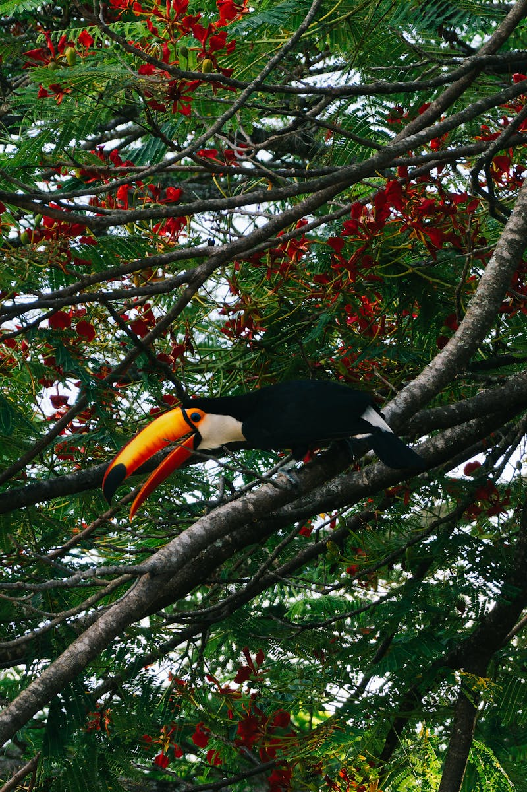

AI phân loại rác
Ứng dụng trí tuệ nhân tạo (AI) tiên tiến giúp người dùng phân loại rác một cách chính xác chỉ bằng cách chụp ảnh. Hệ thống sẽ phân tích hình ảnh và đưa ra nhận định về loại rác đó: tái chế, hữu cơ hay không thể tái sử dụng. Không còn phải bối rối mỗi khi xử lý rác – với AI hỗ trợ, việc sống xanh chưa bao giờ dễ dàng đến thế. Đây là bước đột phá trong việc kết hợp công nghệ với lối sống bền vững.